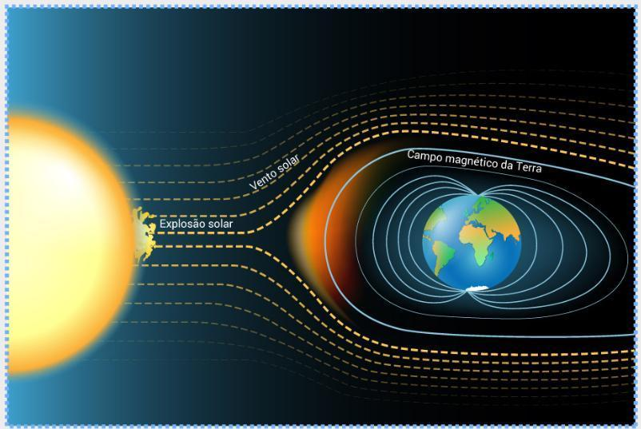
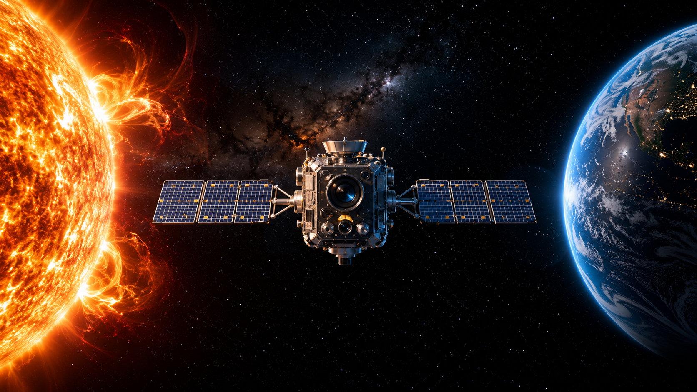
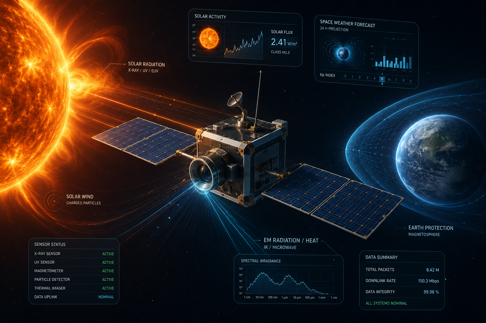

Problema
A crescente dependência de infraestruturas tecnológicas complexas expõe a sociedade moderna a uma vulnerabilidade sem precedentes perante o clima espacial.
Eventos geomagnéticos extremos podem destruir infraestruturas, interromper telecomunicações e aviação civil, gerando prejuízos bilionários e apagões duradouros.
Tecnologia
Um único microssatélite que orbita o Sol na mesma velocidade da Terra, coleta dados de calor e ondas eletromagnéticas.
Ele envia informações antecipadas sobre tempestades solares, permitindo prever a chegada e a intensidade dos impactos na Terra.


Objetivos
Pode mitigar desastres causados por tempestades geomagnéticas extremas, protegendo redes elétricas, telecomunicações e a aviação civil global contra apagões.
Reforçar a resiliência climática e a capacidade de adaptação planetária, evitando colapsos em infraestruturas críticas de energia limpa.
Público
Empresas de energia, operadoras de telecomunicação, agências espaciais e órgãos de defesa civil compõem o público-alvo global.
Atende profissionais como gerentes, agricultores e cientistas determinados a mitigar impactos e prejuízos de severas tempestades solares.
Benefícios
O sistema prevê tempestades solares com antecedência crítica, mitigando riscos catastróficos e protegendo infraestruturas essenciais de energia e telecomunicações.
Entrega relatórios customizados e alertas automatizados, permitindo ações preventivas imediatas para evitar apagões e prejuízos em escala global.
Aplicação
Monitoramento orbital para proteger redes elétricas e telecomunicações contra tempestades solares, evitando colapsos em infraestruturas críticas globais.
Aplica-se no isolamento de subestações, segurança de satélites e em planos de contingência da defesa civil baseados em dados.